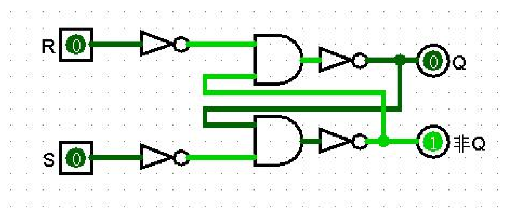
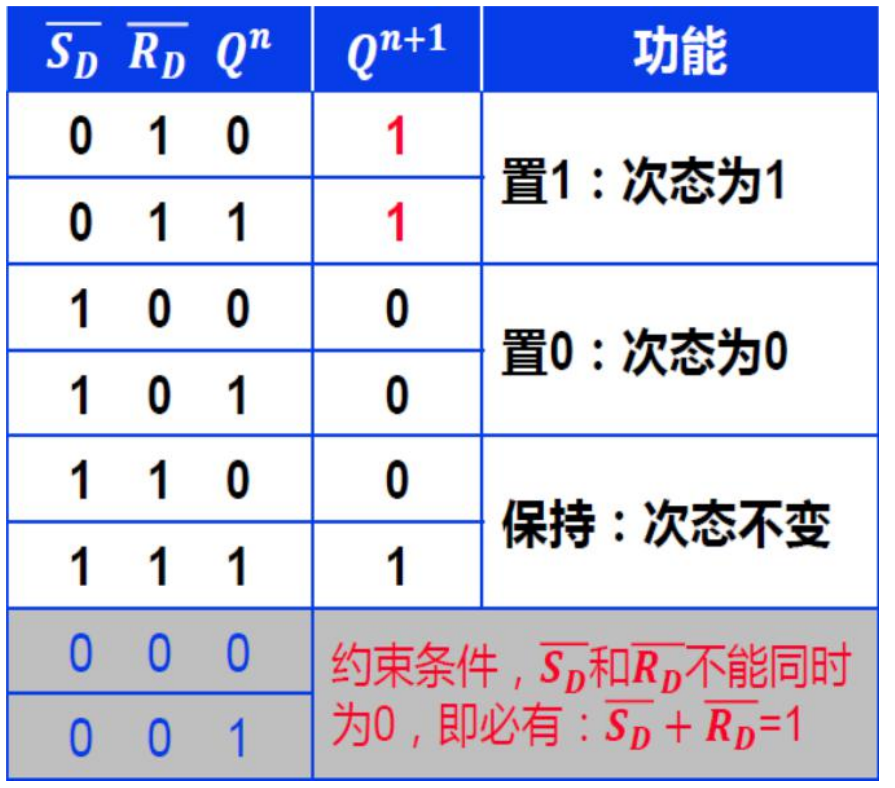
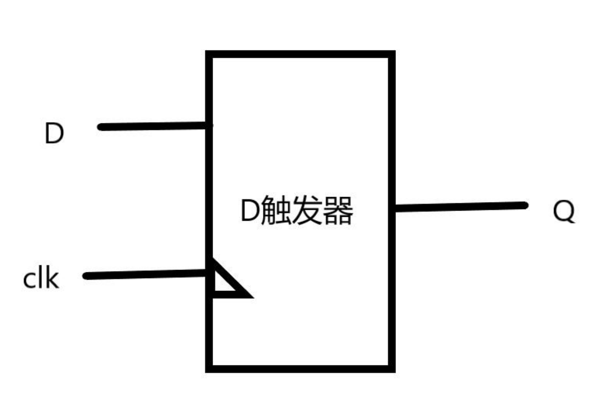
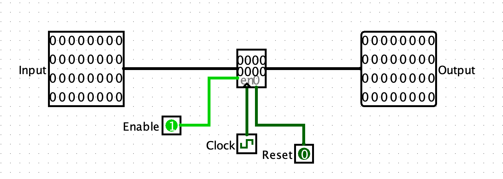

时序逻辑
(说明：时序逻辑理论知识可以参考《数字设计原理与实践第四版》P437 Sequential logic 章节。)
和组合逻辑电路不同，时序电路需要实现"记忆"的功能，那么电路里必然存在用于记忆过去状态的部件，如何存储过去的信息呢？首先我们一起看一下这个"小物件"：SR 锁存器

我们来看研究一下它的真值表：

看起来可能不太好理解，我们一起分析一下：SR 锁存器使得电路具有了记忆上一个状态的功能。其中 S_D 和 R_D 为是电路输入的两个端口， Q^n表示电路当前 的输出， Q^{n+1}表示电路下一个状态的输出。由真值表可以看出，这个电路的输出不仅和当前输入有关，也和上一次的输出有关。显然这个电路就是一种能记住自己之前状态的电路。其实，这就是一个最简单的时序电路，我们称它为 SR 锁存器。我们使 S_D=R_D=0，电路就可以锁住上一个状态的 Q（Q 不仅仅取决于 S_D和 R_D， 还包括上一次的 Q，所以 SR锁存器不是组合逻辑而是时序逻辑），这就是锁存器 名字的由来。
观察它的功能一栏，可以看到，通过改变 S_D 和 R_D为合适的值,我们可以改变 电路的输出，而当 S_D 和 R_D 均为 0时，电路会一直保持原来的输出不变，这看上 去很像 U盘之类的设备（通电时能够修改存储的内容，断电时保持内容不变）。事实上，通过配合合适的外部电路，我们就可以使用这个电路来存储整个电路的状态，从而搭建起更复杂的时序电路。
掌握了时序电路的基本原理之后，请同学们根据教材自学 D 锁存器和 D 触发器的原理。说明：D 锁存器和 D 触发器相关知识可以参考《数字设计原理与实践第四版》 P442。
如果你懒得自学研究 D 锁存器和 D 触发器的原理（还是建议大家了解一下），那么至少要知道 D 触发器的特性：Q^{n+1}=D

这个逻辑表达式是什么意思呢？我们来看一下 D 触发器的示意图：D 和 clk 都是一位输入信号，clk 还有个特殊的名字叫"时钟信号"，因为我们人为规定时钟信号是规则的方波信号。无论 Q 原来是多少，当 clk 信号由 0 跳变到 1时（这就是我 们说的时钟上升沿），Q 就会变成此时的D，并且保持不变直到下一个时钟上升沿 到来。在两个时钟上升沿之间，无论 D怎么变化，Q 都保持不变，以实现记忆功 能。
D 触发器是最常用的时序逻辑基本电路，多个 D 触发器并联在一起就构成了时序逻辑电路的最重要元件：寄存器。
例如 32 个共享 clk 信号的 D 触发器放在一起就是一个 32 位的寄存器。
